Measures of spread: variance, standard deviation, mean absolute deviation and interquartile range
Distributions: binomial, normal, standard normal, Poisson, exponential, student’s t and log-normal
Central limit theorem
Data transformation: Skewness, Q-Q plot and data transformation functions
1 Introduction
This tutorial will cover the basics of statistics and help you to utilize those concepts in R. Most of the topics that I will be discussing here is from what I learned from my undergraduate course: Biological Data Analysis, which was offered in 2019 at IISER-TVM. Then by reading online and by taking courses at DataCamp I further continued my journey to master statistics on my own. If you find any mistakes in any of the concepts that I have discussed in this tutorial, kindly raise it as a GitHub issue or comment them down or you can even mail me (the mail address is given in the footnote). Without further ado let us start!
2 Why do we need statistics?
If you are a student and are currently pursuing an undergrad course in college or a university, then chances are that you would come across scientific publications in your respective fields. And while you are reading them, for most of the articles, there will be a separate section highlighting the statistical methods used in the published study. So what was the purpose of it? One of the most important purpose statistical tests fulfil is that it gives evidence to test if the results given in the study occurred due to pure chance alone or due to the experiment that the authors of the paper did.
3 Descriptive and Inferential statistics
Statistics is broadly categorized into two: Descriptive statistics and Inferential statistics
Descriptive statistics: Descriptive statistics are used to describe and summarise data. Suppose we have data on the food preferences of a bird in a small area of an island. We found that out of the 100 birds we observed, 20 of them prefer fruits (20%), 30 of them prefer insects (30%) and the remaining 50 prefer reptiles (50%). So with the available data, this is what we know about the birds we have observed.
Inferential statistics: Inferential statistics, as suggested by the name is used to make inferences about the population using the sample collected from that population. Using the above data, we can make inferences about the food preferences of all the birds on the island. Thus, we can find what is the percentage of birds on that island that would be preferring reptiles to eat.
4 A note on data
Data can be broadly categorised into two: Quantitative and Qualitative. Quantitative data are numerical values and can be continuous or discrete. They can also be arranged in a defined order (as they are numbers) and are thus called ordinal data. Qualitative data are often categorical data which can be either ordinal or nominal.
Examples of quantitative and qualitative data
Examples of Quantitative data
Examples of Qualitative data
Speed of train
Survival data: Alive or Dead
Age of a person
Outcomes: Win or Lose
Proportion of visits to a shop
Choices: Kannur or Pune
Change in prices of an item
Marital status: Married or Unmarried
Growth of bacteria
Ordered choices: Agree, Somewhat agree, Disagree
5 Measures of centre
A good way to summarise data is by looking at their measure of the centre which can be mean, median and mode. I am sure that you all know how to find these measures.
Mean is best used to describe data that are normally distributed or don’t have any outliers.
Median is best for data with non-normal distribution as it is not affected much by outliers in the data. For a median value of 10, what it means is that 50% of our data is above the value of 10 and 50% of the remaining data is below the value of 10.
Mode is best used if our data have a lot of repeated values and is best used for categorical data as for calculating mode, the data does not need to be in ordinal scale.
Let us visualize the measure of centres.
We will use the penguins dataset from the {palmerpenguins} package in R. Let’s plot the distribution curve for the “body mass” of the “Chinstrap” species of penguins. In R, function for calculating mean is mean() and for median is median(). There is no base function to calculate the mode, so we will write a function in R which can calculate the mode value.
Code
if (!require(palmerpenguins)) install.packages('palmerpenguins')library(ggplot2)library(dplyr)library(palmerpenguins)# Creating a function to calculate the mode valuegetmode <-function(v) { uniqv <-unique(v) uniqv[which.max(tabulate(match(v, uniqv)))]}# Calculating the mean, median and modepen_avg <- penguins %>%filter(species =="Chinstrap") %>%summarise(mean =mean(body_mass_g),median =median(body_mass_g),mode =getmode(body_mass_g))# Plotting the datapenguins %>%filter(species =="Chinstrap") %>%ggplot(aes(x = body_mass_g)) +xlab("Body Mass (g)") +ylab("Density") +ggtitle("Body mass distribution") +geom_density(fill ="grey") +labs(subtitle =paste0("N=",penguins %>%filter(species =="Chinstrap") %>%nrow())) +geom_vline(aes(xintercept = pen_avg$mean, colour ="red")) +geom_text(aes(x=pen_avg$mean, label="mean", y=4e-04), colour="red", angle=90, vjust =1.2, text=element_text(size=11)) +geom_vline(aes(xintercept = pen_avg$median, colour ="blue")) +geom_text(aes(x=pen_avg$median, label="median", y=4e-04), colour="blue", angle=90, vjust =-1.2, text=element_text(size=11)) +geom_vline(aes(xintercept = pen_avg$mode, colour ="green")) +geom_text(aes(x=pen_avg$mode, label="mode", y=4e-04), colour="green", angle=90, vjust =-1.2, text=element_text(size=11)) +theme_bw() +theme(legend.position="none")
For a normal distribution, which is what we have in this case, the mean, median and mode are all the same value and are in the middle of the curve. For a skewed dataset or a dataset with outliers, all the measures of the centre will be different and they depend on the skewness of the data.
Consider the plot of the diamonds dataset from the {ggplot2} package in R. The data is skewed in nature.
Here the curve is right-skewed, as the mean is skewed towards the right side of the mode value. If it was the other way around then the curve will be called left-skewed.
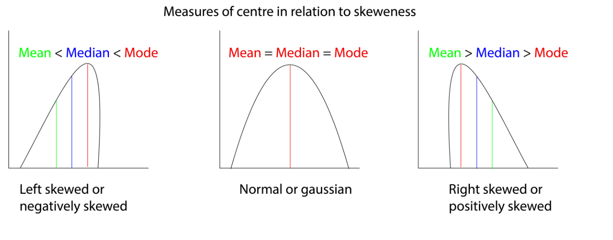
Measures of centre in relation to skeweness
6 Measures of spread
Like the measures of the centre, we can also summarise the data by measuring the spread of the data. Spread tell us how close or how far each of the data points is distributed in the dataset. There are many methods to measure the spread of the data, let us look at each of them one by one.
6.1 Variance
The variance of data is defined as the average squared difference from the mean of the data. It tells us how far each of our data points is from the mean value.
The formula for finding the variance is as follows;
s = \sigma^2 = \frac{\sum (x_{i} - \bar{x})^{2}}{n - 1}
Where s is sample variance, x_{i} is your data point, \bar{x} is mean, n is the sample size and n-1 is called as the degrees of freedom. Here \sigma is the standard deviation which is explained below.
The function to calculate variance in R is var()
library(palmerpenguins)# Calculating the variance of bill lengthvar(penguins$bill_length_mm, na.rm = T)
[1] 29.80705
6.2 Standard deviation
Standard deviation like the variance tells us how much each of our data points is spread around the mean and is easier to understand as they are not being squared like in the case with variance.
The formula to calculate the standard deviation of the mean is;
Where \sigma is the standard deviation, x_{i} is your data point, \bar{x} is the sample mean, n is the sample size and n-1 is called the degrees of freedom. Here \sigma^2 gives the variance of the data.
The function to calculate variance in R is sd()
library(palmerpenguins)# Calculating the variance of bill lengthsd(penguins$bill_length_mm, na.rm = T)
[1] 5.459584
# Calculating the variance(sd(penguins$bill_length_mm, na.rm = T))^2
[1] 29.80705
6.3 Mean absolute deviation
Mean absolute deviation takes the absolute value of the distances to the mean and then takes the mean of those differences. While this is similar to standard deviation, it’s not the same. Standard deviation squares distances, so longer distances are penalized more than shorter ones, while mean absolute deviation penalizes each distance equally.
The formula to calculate mean absolute deviation is;
Where n is the sample size, x_{i} is your data point, \bar{x} is the sample mean, n is the sample size and n-1 is called the degrees of freedom. Here \sigma^2 gives the variance of the data.
To calculate absolute deviation in R, there is no base function to do so, so we have to manually calculate it.
library(palmerpenguins)# Calculating the distancesdistances <- penguins$bill_length_mm -mean(penguins$bill_length_mm, na.rm = T)# Calculating the mean absolute deviationmean(abs(distances), na.rm = T)
[1] 4.706797
6.4 Interquartile range (IQR)
Quantiles of data can be calculated using the quantile() function in R. By default, the data is split into four equal parts which is why it’s called a ‘quartile’.
library(palmerpenguins)# Calculating the quartilequantile(penguins$bill_length_mm, na.rm = T)
Here the data is split into four equal parts which are called the quartiles of the data. In the output, we can see that 25% of the data points are between 32.1 and 39.225, and another 25% of the data points are between 39.225 and 44.450 and so on. Here the 50% quartile is 44.450 which is the median value.
We can manually specify the splitting. Below given code splits the data into five parts and hence is called a quantile. The splitting is specified by the argument probs inside the quantile() function. You can either manually put the proportions of the split or use the seq() function to provide the proportions.
IQR is the distance between the second quartile and the third quartile of the data or the height of the box plot.
The interquartile range can be calculated using the IQR() function.
# Finding the IQRIQR(penguins$bill_length_mm, na.rm = T)
[1] 9.275
The interquartile range is overall the best way to summarise the spread of the data and forms the crux of a boxplot design.
library(palmerpenguins)# Plotting a boxplotggplot(penguins, aes(species, body_mass_g, fill = species)) +geom_boxplot() +labs(title ="Body masses of three different species of penguins",x ="Penguin species",y ="Body mass (g)") +theme_bw()
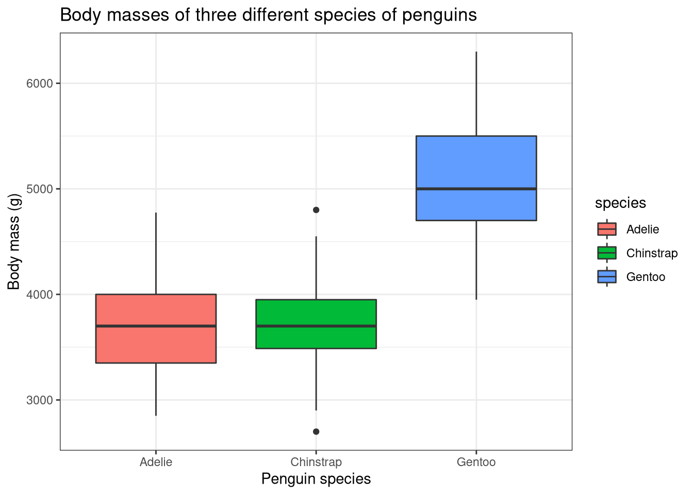
In the box plot, the middle dark line is the median or the 50% quartile or the second quartile, the bottom of the box is the first quartile (25%) and the top of the box is the third quartile (75%). You can see two data points outside the box for ‘Chinstrap’ species, these are outliers. What makes a data point an outlier? That’s where the whiskers of the box come in. Typically the outliers are calculated in the following format;
Here Q_1 is the first quartile, Q_3 is the third quartile and IQR is the interquartile distance.
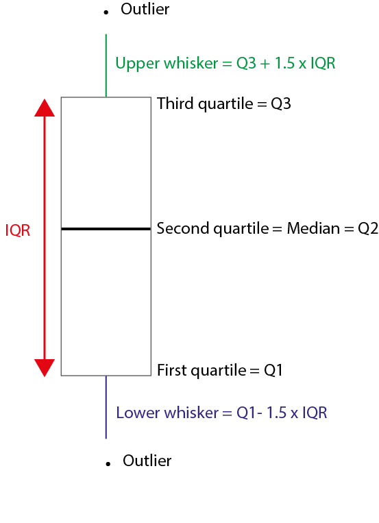
Characteristics of a boxplot
7 Distributions
We will come across different types of distributions while analysing data. Let us look at each of them.
7.1 Binomial distribution
The binomial distribution describes the probability of the number of successes in a sequence of independent trials. You might have seen this type of distribution in your introductory probability classes. It is easy to visualize this using a coin toss event. Imagine we have a fair coin, we are tossing it to see the number of times we get heads. So here getting a head is a success and getting a tail is a failure.
In R we can simulate this using the rbinom() function.
We want to see the results when we are tossing a coin once. Since the functions take random values, to be concise I will set a seed so that you can repeat the codes that I have given to get the same results.
# Setting seedset.seed(123)# Tossing a coin one timerbinom(1,1,0.5)
[1] 0
We got a value of zero, which corresponds to the event of getting a tail. Here, in the rbinom() function, we have the following syntax;
rbinom(no. of flips, no. of coins, the probability of getting a head)
To see the number of heads we get by flipping a single coin three times would be with equal chances of getting a head and a tail is;
# Setting seedset.seed(123)# Tossing a one coins three timesrbinom(3,1,0.5)
[1] 0 1 0
In the first flip we got zero heads, in the second we got one head and in the third, we got zero head.
Checking to see how total number of heads we get by flipping three coins one time;
# Setting seedset.seed(258)# Tossing a three coins one timerbinom(1,3,0.5)
[1] 2
So we get a total of 2 heads when we flipped three coins one time.
Checking to see the total number of heads we get by flipping four coins three times.
# Setting seedset.seed(258)# Tossing a four coins three timesrbinom(3,4,0.5)
[1] 3 3 2
In the first flip of three coins, we got three heads, in the second we got again three heads and lastly, we got 2 heads.
We can also calculate the results if our coin is biased.
Checking to see the total number of heads we get by flipping four coins three times, the coin only has a 25% probability of falling on heads.
# Setting seedset.seed(258)# Tossing a four coins three times, but coins is unfairrbinom(3,4,0.25)
[1] 2 2 1
Hence the rbinom() function is used to sample from a binomial distribution.
What about finding discrete probabilities like are chance of getting 7 heads if we flipped a coin 10 times? To find that we use the function dbinom().
Checking the probability of getting exactly 7 heads while tossing a coin 10 times;
# Setting seedset.seed(258)# Probability of getting 7 heads in 10 coin flips# dbinom(no. of heads, no. of flips, chance of getting a head)dbinom(7,10,0.5)
[1] 0.1171875
Likewise, we can also find the probability of getting 7 or fewer heads while tossing the 10 times using the pbinom() function.
# Setting seedset.seed(258)# Probability of getting 7 heads in 10 coin flips# pbinom(no. of heads, no. of flips, chance of getting a head)pbinom(7,10,0.5)
[1] 0.9453125
To find the probability of getting more than 7 heads in 10 trials would be;
# Setting seedset.seed(258)# Probability of getting more than 7 heads in 10 coin flips# Set lower.tail = FALSEpbinom(7,10,0.5, lower.tail = F)
[1] 0.0546875
# Alternatively you find it in the following also1-pbinom(7,10,0.5)
[1] 0.0546875
The expected value of an event would be equal to; E = n*p
Where n is the number of trails and p is the probability of successes.
Now let us visualize the binomial distribution using the function we have covered till now;
Code
library(dplyr)library(ggplot2)# Plotting a binomial distributiondata.frame(heads =0:10, pdf =dbinom(0:10, 10, prob =0.5)) %>%ggplot(aes(x =factor(heads), y = pdf)) +geom_col() +geom_text(aes(label =round(pdf,2), y = pdf +0.01),position =position_dodge(0.9),size =3,vjust =0 ) +labs(title ="Probability of X = x successes.",subtitle ="Binomial distribution (n = 10, p = 0.5)",x ="No of heads (successes)",y ="Probability") +theme_bw()
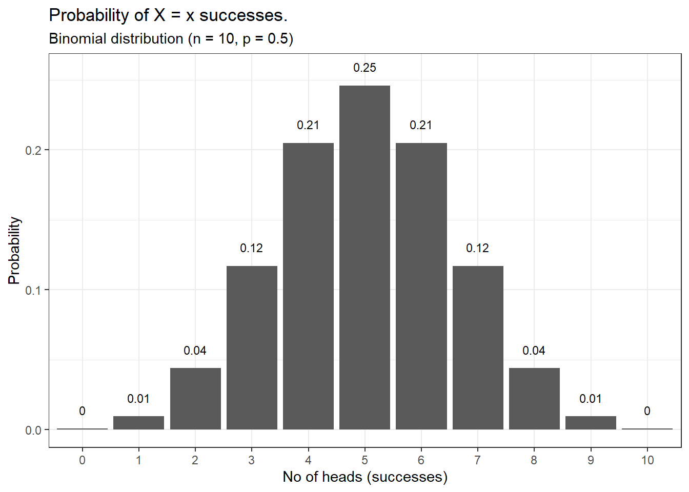
This is a binomial distribution showing the probability of getting heads when a single coin is flipped 10 times. For a fair coin, we get the expected probability that most times we will get 5 heads when the coin is flipped 10 times.
7.2 Normal distribution
We saw an example of the normal distribution when we were discussing the measures of the centre. The normal distribution or also known as the Gaussian distribution is one of the most important distributions in statistics as it is one of the requirements the data has to fulfil for numerous statistical analyses.
Let us look at the penguins dataset from the {palmerpenguins} package in R. We will plot the distribution curve for the “body mass” of the “Chinstrap” species of penguins.
Code
library(ggplot2)library(dplyr)library(palmerpenguins)# Plotting a normal distributionpenguins %>%filter(species =="Chinstrap") %>%ggplot(aes(x = body_mass_g)) +xlab("Body Mass (g)") +ylab("Density") +ggtitle("Body mass distribution of Chinstrap penguins") +geom_density(fill ="darkred") +labs(subtitle =paste0("N=", penguins %>%filter(species =="Chinstrap") %>%nrow())) +theme_bw()
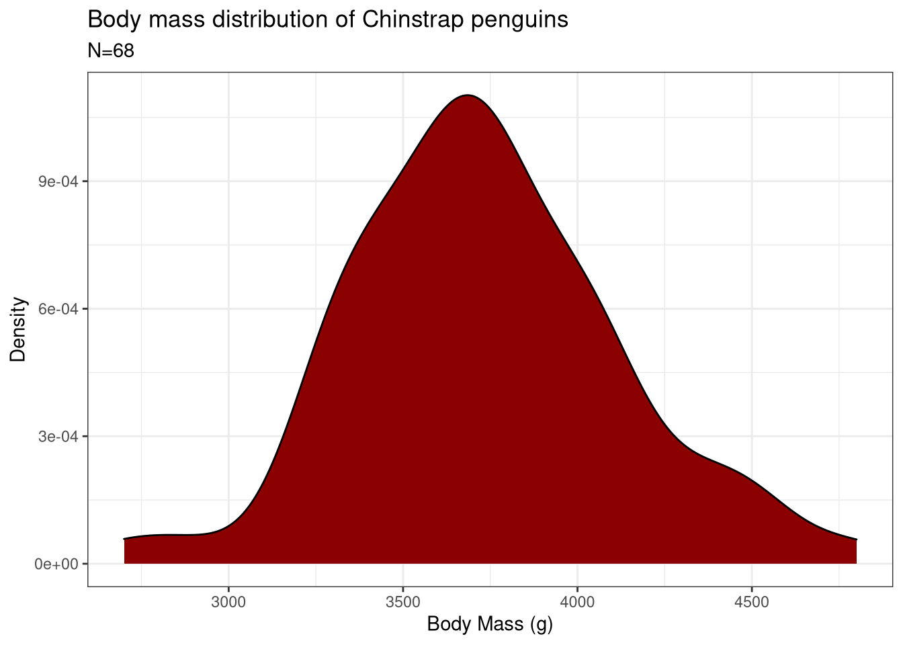
As you can see, the data distribution closely resembles a “bell-shaped” curve. On closer look, you can also see that the area under the curve is almost symmetrical to both sides and there is only a single peak present. We can also visualize the variance of the data by looking at the width of the curve. A wider curve means variance is higher and a narrower curve means variance in the data is smaller. Also for a normal distribution, there are no outliers present. We saw earlier that the mean, median and mode for a normal distribution are the same.
As seen earlier, we can use the rnorm() function to sample from the normal distribution. The syntax for the function is as follows;
rnorm(number of samples, mean, sd)
Many real-life datasets closely resemble a normal distribution, like the one which is plotted above. Since they approximate a normal distribution, we can use different base functions in R to answer some interesting questions.
What percentage of Chinstrap penguins are below 3500g? To get this answer we approximate the body mass distribution of Chinstrap penguins to a normal distribution and use the pnrom() function.
library(dplyr)library(palmerpenguins)# Finding mean and sd of the body masses of Chinstrap penguinschin_body_mass_summary <- penguins %>%filter(species =="Chinstrap") %>%summarise(mean_body_mass =mean(body_mass_g),sd_body_mass =sd(body_mass_g))# Finding the percentage of penguins below 3500gpnorm(3500, mean = chin_body_mass_summary$mean_body_mass,sd = chin_body_mass_summary$sd_body_mass)
[1] 0.2721009
So there are about 27% of penguins who have their body mass below 3500g
What percentage of Chinstrap penguins are above 4000g? To get this answer we again use the pnrom() function but use the lower.tail = F argument.
library(dplyr)library(palmerpenguins)# Finding mean and sd of the body masses of Chinstrap penguinschin_body_mass_summary <- penguins %>%filter(species =="Chinstrap") %>%summarise(mean_body_mass =mean(body_mass_g),sd_body_mass =sd(body_mass_g))# Finding the percentage of penguins above 4000gpnorm(4000, mean = chin_body_mass_summary$mean_body_mass,sd = chin_body_mass_summary$sd_body_mass,lower.tail = F)
[1] 0.2436916
There are about 24% of penguins in the dataset have a body mass above 4000g.
What percentage of Chinstrap penguins have their body masses between 3000g and 4000g? To find this answer, we first find the percentage of penguins who have masses below 3000g and then below 4000g. Then we subtract them to get our answer.
library(dplyr)library(palmerpenguins)# Finding mean and sd of the body masses of Chinstrap penguinschin_body_mass_summary <- penguins %>%filter(species =="Chinstrap") %>%summarise(mean_body_mass =mean(body_mass_g),sd_body_mass =sd(body_mass_g))# Finding the percentage of penguins between 3000g and 4000gbelow_3000 <-pnorm(3000, mean = chin_body_mass_summary$mean_body_mass,sd = chin_body_mass_summary$sd_body_mass)below_4000 <-pnorm(4000, mean = chin_body_mass_summary$mean_body_mass,sd = chin_body_mass_summary$sd_body_mass)below_4000 - below_3000
[1] 0.7280752
About 73% of penguins have body masses between 3000g and 4000g.
At what body mass is 60% of the penguins weigh lower than? We can get the answer using the qnorm() function.
library(dplyr)library(palmerpenguins)# Finding mean and sd of the body masses of Chinstrap penguinschin_body_mass_summary <- penguins %>%filter(species =="Chinstrap") %>%summarise(mean_body_mass =mean(body_mass_g),sd_body_mass =sd(body_mass_g))# Body mass at which 60% of the penguins weigh lower thanqnorm(0.6, mean = chin_body_mass_summary$mean_body_mass,sd = chin_body_mass_summary$sd_body_mass)
[1] 3830.458
We find that 60% of the penguins weigh lower than 3830g.
At what body mass is 30% of the penguins weigh greater than? We can get the answer using the qnorm() function.
library(dplyr)library(palmerpenguins)# Finding mean and sd of the body masses of Chinstrap penguinschin_body_mass_summary <- penguins %>%filter(species =="Chinstrap") %>%summarise(mean_body_mass =mean(body_mass_g),sd_body_mass =sd(body_mass_g))# Body mass at which 30% of the penguins weigh greater thanqnorm(0.3, mean = chin_body_mass_summary$mean_body_mass,sd = chin_body_mass_summary$sd_body_mass, lower.tail = F)
[1] 3934.634
We find that 30% of the penguins weigh greater than 3935g.
7.3 Standard normal distribution
A normal distribution with mean (\bar{x}) = 0 and variance (\sigma^{2}) = 1 is called standard normal distribution or a z-distribution. With the help of standard deviation, we can split the area under the curve of standard normal distribution into three parts. This partitioning of the area is known as the 68–95–99.7 rule.
What it means is that;
68% of the data will lie within ±\sigma from \bar{x} or they lie within 1 standard deviation from the mean
95% of the data will lie within ±2\sigma from \bar{x} or they lie within 2 standard deviations from the mean
99.7% of the data will lie within ±3\sigma from \bar{x} or they lie within 3 standard deviations from the mean
Code
library(ggplot2)# Plotting a standard normal distributionggplot(data.frame(x =c(-4,4)), aes(x)) +# Plot the pdfstat_function(fun = dnorm,n =101, args =list(mean =0, sd =1),geom ="area", color ="grey75", fill ="grey75", alpha =0.4) +# Shade below -2stat_function(fun =function(x) ifelse(x <=-2, dnorm(x, mean =0, sd =1), NA),aes(x),geom ="area", color =NA, fill ="grey40", alpha =0.7) +# Shade below -1stat_function(fun =function(x) ifelse(x <=-1, dnorm(x, mean =0, sd =1), NA),aes(x),geom ="area", color =NA, fill ="grey40", alpha =0.7) +# Shade above 2stat_function(fun =function(x) ifelse(x >=2, dnorm(x, mean =0, sd =1), NA),aes(x),geom ="area", color =NA, fill ="grey40", alpha =0.7) +# Shade above 1stat_function(fun =function(x) ifelse(x >=1, dnorm(x, mean =0, sd =1), NA),aes(x),geom ="area", color =NA, fill ="grey40", alpha =0.7) +ggtitle("The standard normal distribution") +xlab(expression(italic(z))) +ylab(expression(paste("Density, ", italic(f(z))))) +geom_text(x =0.5, y =0.25, size =3.5, fontface ="bold",label ="34.1%") +geom_text(x =-0.5, y =0.25, size =3.5, fontface ="bold",label ="34.1%") +geom_text(x =1.5, y =0.05, size =3.5, fontface ="bold",label ="13.6%") +geom_text(x =-1.5, y =0.05, size =3.5, fontface ="bold",label ="13.6%") +geom_text(x =2.3, y =0.01, size =3.5, fontface ="bold",label ="2.1%") +geom_text(x =-2.3, y =0.01, size =3.5, fontface ="bold",label ="2.1%") +geom_vline(xintercept=0, col ="red") +annotate("text", x=-0.25, y=0.15, label="Mean(x̅) = 0", angle=90) +theme_bw()
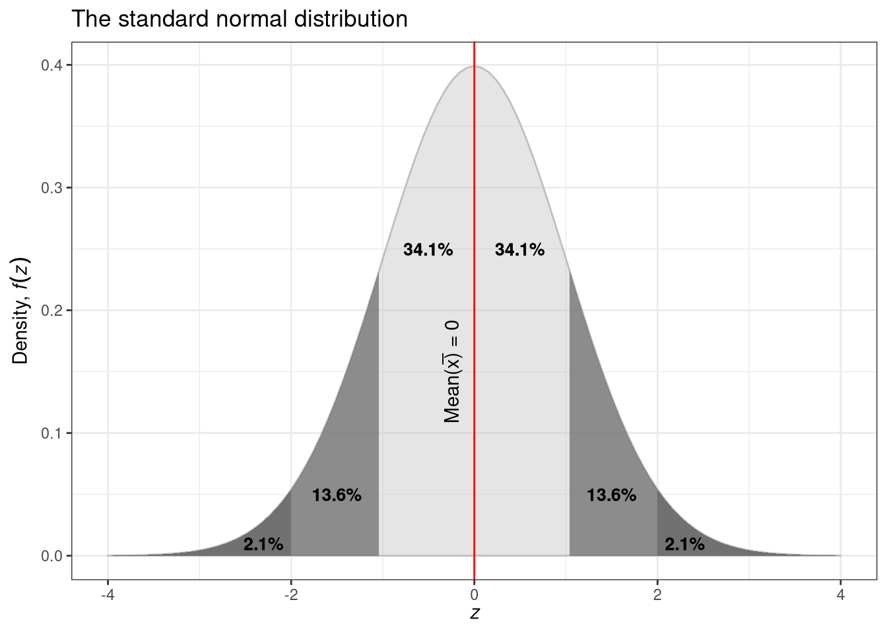
The lightest grey area contains 68% (~ 34.1 + 34.1) of the data and it corresponds to \bar{x}±\sigma.
The second lightest grey area contains 95% (~ 34.1 + 34.1 + 13.6 + 13.6) and it corresponds to \bar{x}±2\sigma.
The darkest grey area contains 99.7% (~ 34.1 + 34.1 + 13.6 + 13.6 + 2.1 + 2.1) and it corresponds to \bar{x}±3\sigma.
For a standard normal distribution; the area under the curve is 1, the mean is 0 and the variance is 1.
7.4 Poisson distribution
Poisson distribution describe poisson processes. A Poisson process is when events happen at a certain rate but are completely random. For example; the number of people visiting the hospital, the number of candies sold in a shop, and the number of meteors falling on earth in a year. Thus the Poisson distribution describes the probability of some number of events happening over a fixed time. Thus the Poisson distribution is only applicable for datasets containing 0 and positive integers. It won’t work with negative or decimal values.
The Poisson distribution has the same value for its mean and variance and is denoted by \lambda.
As seen in earlier distributions, the function to sample from a Poisson distribution is rpois(). Given below is an example of a Poisson distribution for \lambda = 3, where the number of events ranges from 0 to 10.
Code
library(dplyr)library(ggplot2)# Plotting a poisson distributiondata.frame(events =0:10, pdf =dpois(x =0:10, lambda =3)) %>%ggplot(aes(x =factor(events), y = pdf)) +geom_col() +geom_text(aes(label =round(pdf,2), y = pdf +0.01),position =position_dodge(0.9),size =3,vjust =0 ) +labs(title ="Probability of X = x Events",subtitle ="Poisson distribution (λ = 3)",x ="Events (x)",y ="Probability") +theme_bw()
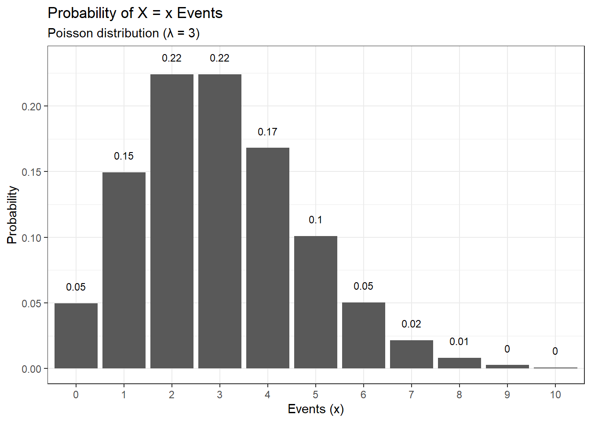
Let us take a scenario where the number of people visiting the hospital per week is 25. This is a Poisson process and we can model this scenario using a Poisson distribution. Here \lambda = 25. As seen earlier, we can use different base functions in R to answer different questions concerning the Poisson distribution.
What is the probability that 20 people will visit the hospital in a week given that 25 people on average visit the hospital in a week?
# Calculating the probability that 20 people will visit the hospital in a weekdpois(20, lambda =25)
[1] 0.05191747
We get a 5.2% chance that 20 people will visit the hospital in a week.
What is the probability that 15 or fewer people will visit the hospital given that 25 people on average visit the hospital in a week? To get the answer to this question, we use the ppois() function.
# Calculating the probability that 15 or fewer people will visit the hospital in a weekppois(15, lambda =25)
[1] 0.02229302
There is a 2.2% chance that 15 or fewer people will visit the hospital.
What is the probability that more than 5 people will visit the hospital given that 25 people on average visit the hospital in a week? To get the answer to this question, we use the ppois() function but with the lower.tail = F argument.
# Calculating the probability that more than 5 people will visit the hospital in a weekppois(5, lambda =25, lower.tail = F)
[1] 0.9999986
We get a 100% chance that more than 5 people will visit the hospital.
7.5 Exponential distribution
The exponential distribution describes the probability distribution of time between events in a Poisson process. Exponential distribution can be used to predict the probability of waiting 10 minutes between two visitors in a hospital, the probability of elapsing 5 minutes between the sale of two candies, probability of having 6 months between two meteor showers on earth.
Some real-life examples which exhibit exponential distribution are bacterial growth rate, oil production, call duration, and my parent’s patience (quickly decaying curve).
The exponential distribution is also described by the same parameter \lambda as that of the Poisson distribution but it’s measured as a ‘rate’.
Code
library(dplyr)library(ggplot2)# Plotting a exponential distributionx <-seq(0, 20, length.out=1000)dat <-data.frame(time =x, px=dexp(x, rate=0.6))ggplot(dat, aes(x=x, y=px)) +geom_line() +labs(title ="Probability of X = x Time",subtitle ="Exponential distribution (λ = 0.6 or rate = 0.6)",x ="Time",y ="Probability") +theme_bw()
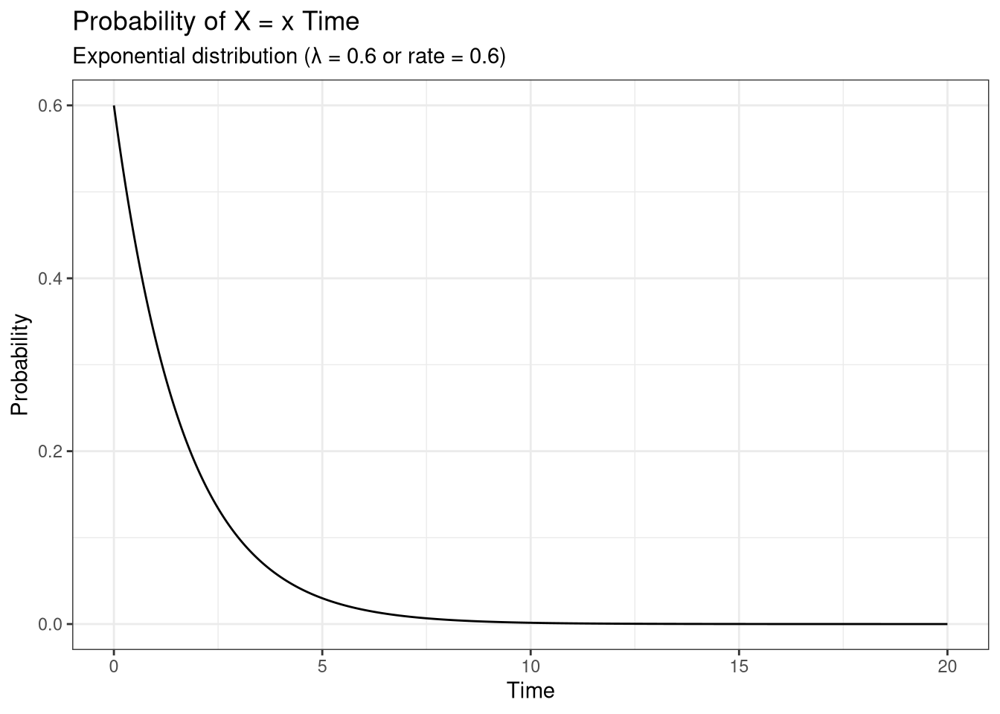
You can use the function rexp() to sample across an exponential distribution, similarly use dexp() and pexp() to find the probability of events like shown for other distributions.
7.6 Student’s t distribution
The student’s t distribution or simply called the t distribution is a probability distribution similar to a normal distribution but is estimated with a low sample size collected from a population whose standard deviation is unknown. The parameter in estimating the t-distribution is called the degrees of freedom.
Code
# Plotting the t distribution and comparing to the standard normal distributionggplot(data =data.frame(x =c(-4,4)), aes(x)) +stat_function(fun =function(x) dt(x, df =2),aes(color ="t")) +stat_function(fun = dnorm, n =101, args =list(mean =0, sd =1),aes(color ="normal")) +labs(title ="Student's t-distribution vs Standard normal distribution",subtitle ="t-distribution (degrees of freedom = 2)",x ="t or z",y ="Probability") +scale_colour_manual("Distribution", values =c("red", "blue")) +theme_bw()
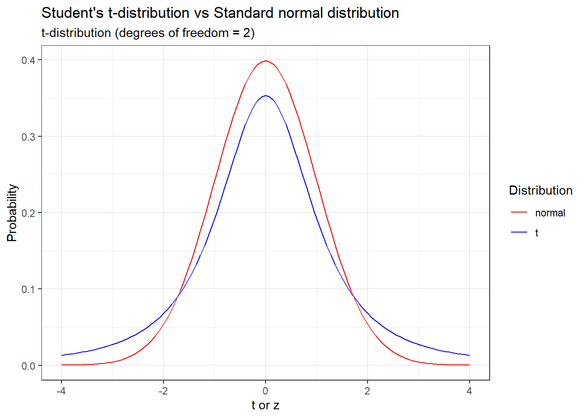
In the graph shown above, the t-distribution with degrees of freedom = 2 is plotted alongside the standard normal distribution. You can see that both the tail ends of the t-distribution are thicker as compared to the normal distribution and hence for the t-distribution the values are more away from the mean. But as the degrees of freedom increase, the t-distribution tends to become similar to that of a normal distribution.
Code
# Plotting the t distribution and comparing to the standard normal distributionggplot(data =data.frame(x =c(-4,4)), aes(x)) +stat_function(fun =function(x) dt(x, df =2),aes(color ="t_2")) +stat_function(fun =function(x) dt(x, df =25),aes(color ="t_25")) +stat_function(fun = dnorm, n =101, args =list(mean =0, sd =1),aes(color ="normal")) +labs(title ="Student's t-distributions vs Standard normal distribution",subtitle ="t-distribution (df = 2 and df = 25)",x ="t or z",y ="Probability") +scale_colour_manual("Distribution", values =c("red", "blue", "darkgreen")) +theme_bw()
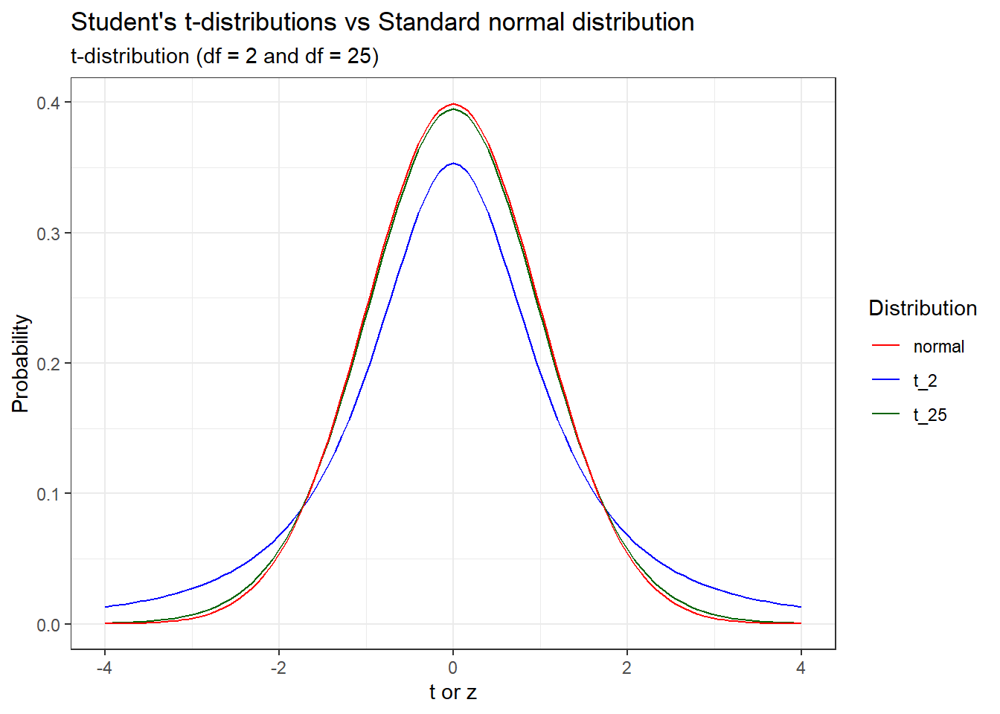
In the above graph, you can see that the t-distribution with degrees of freedom = 25 (green) is very similar to the standard normal distribution.
7.7 Log-normal distribution
The log-normal distribution is a probability distribution of variable ‘x’ whose log-transformed values follow a normal distribution. Like the normal distribution, log-normal distribution has a mean value and a standard deviation which are estimated from log-transformed values. Some real-life examples which follow the log-normal distribution are; the length of chess games, blood pressure in adults, and the number of hospitalizations in the 2003 SARS outbreak.
Code
library(dplyr)library(ggplot2)# Plotting a log normal distributionggplot(data =data.frame(x =c(-4,4)), aes(x)) +stat_function(fun = dlnorm, args =list(meanlog =2.2, sdlog =0.44), colour ="red") +labs(title ="Log normal distribution",subtitle ="Log normal distribution [mean_log = 2.2 and sd_log = 0.44]",x ="x",y ="Probability") +theme_bw()
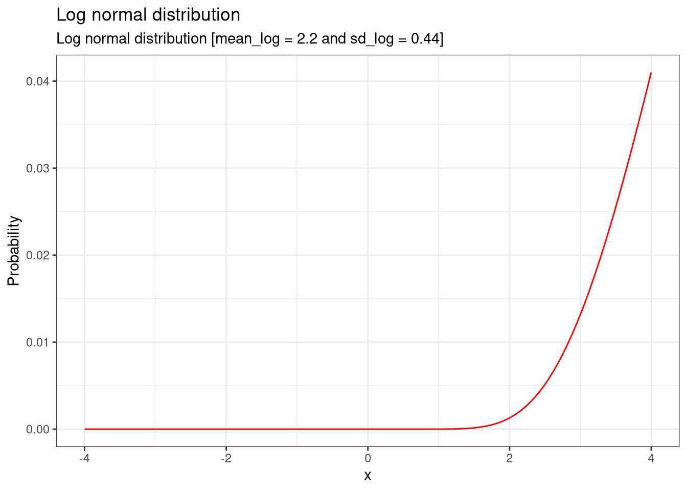
8 The central limit theorem
Imagine we are rolling a die 5 times and we are calculating the mean of the results.
die <-c(1,2,3,4,5,6)# Rolling a die 5 timessample_of_5 <-sample(die, 5, replace = T)sample_of_5
[1] 1 1 5 6 2
# Calculating the mean fo the resultsmean(sample_of_5)
[1] 3
Now imagine we are repeating the experiment of rolling a die 5 times for 10 trials and then we are calculating the mean for each trial.
library(dplyr)die <-c(1,2,3,4,5,6)# Rolling a die 5 times and repreating it 10 timessample_of_5 <-replicate(10, sample(die, 5, replace = T) %>%mean())# Mean values for the 10 trialssample_of_5
[1] 3.2 4.0 2.4 4.8 4.8 3.2 3.0 4.8 3.2 3.6
Let us go further and repeat this experiment for 100 and 1000 trials and visualize the means.
set.seed(123)library(dplyr)library(ggplot2)die <-c(1,2,3,4,5,6)# Rolling a die 5 times and repeating it 10 timessample_of_5 <-replicate(10, sample(die, 5, replace = T) %>%mean())# Plotting the graphhist(sample_of_5, xlab ="Sample means")
Code
set.seed(123)library(dplyr)library(ggplot2)die <-c(1,2,3,4,5,6)# Rolling a die 5 times and repeating it 10 timessample_of_5 <-replicate(100, sample(die, 5, replace = T) %>%mean())# Plotting the graphhist(sample_of_5, xlab ="Sample means")
Code
set.seed(123)library(dplyr)library(ggplot2)die <-c(1,2,3,4,5,6)# Rolling a die 5 times and repeating it 10 timessample_of_5 <-replicate(1000, sample(die, 5, replace = T) %>%mean())# Plotting the graphhist(sample_of_5, xlab ="Sample means")
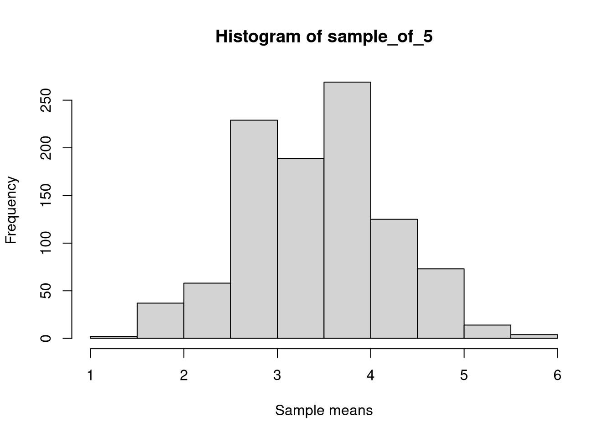
You can see that as the number of trials increases, the distribution of means reaches a normal distribution. This is a result of the central limit theorem.
The central limit theorem states that a sampling distribution of a statistic will approach a normal distribution as the number of trials increases, provided that the samples are randomly sampled and are independent.
In the above case, we can see that the mean of the samples approaches the central value or the ‘expected value’ of 3.5.
The central limit theorem also applies to other statistics such as the standard deviation.
set.seed(123)library(dplyr)library(ggplot2)die <-c(1,2,3,4,5,6)# Rolling a die 5 times and repeating it 10 timessample_of_5 <-replicate(10, sample(die, 5, replace = T) %>%sd())# Plotting the graphhist(sample_of_5, xlab ="Sample standard deviation")
Code
set.seed(123)library(dplyr)library(ggplot2)die <-c(1,2,3,4,5,6)# Rolling a die 5 times and repeating it 10 timessample_of_5 <-replicate(100, sample(die, 5, replace = T) %>%sd())# Plotting the graphhist(sample_of_5, xlab ="Sample standard deviation")
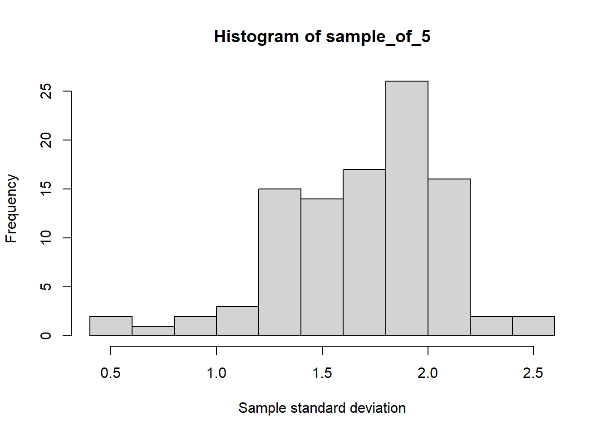
Code
set.seed(123)library(dplyr)library(ggplot2)die <-c(1,2,3,4,5,6)# Rolling a die 5 times and repeating it 10 timessample_of_5 <-replicate(1000, sample(die, 5, replace = T) %>%sd())# Plotting the graphhist(sample_of_5, xlab ="Sample standard deviation")
Thus as a result of the central limit theorem, we can take multiple samples from a large population and estimate different statistics which would be an accurate estimate of the population statistic. Thus we can circumvent the difficulty of sampling the whole population and still be able to measure population statistics and make useful inferences.
9 Data transformation
Sometimes it is easier to visualise data after transforming it rather than trying to see it in its raw format, especially if we are working with skewed data. Given below are different datasets which have different skewness to them. For each data, the quantile-quantile plot is also plotted. The quantile-quantile plot or simply called the Q-Q plot plots the normal quantiles of the data distribution on the x-axis and the quantiles of the dataset on the y-axis. If our data is normally distributed, then the normal quantile and the data quantile would be the same and will be in a straight line. Deviation from this linear nature can be a result of the skewness of the dataset and can be visualized easily using a Q-Q plot.
9.1 Normal distribution
We have seen what a normal distribution is, now let us look at its Q-Q plot.
library(ggplot2)# Plotting a normal distributiondata.frame(events =0:100000, pdf =rnorm(n =0:100000, 1)) %>%ggplot(aes(pdf)) +geom_density() +labs(title ="Normal distribution",x ="x",y ="Probability") +theme_bw()
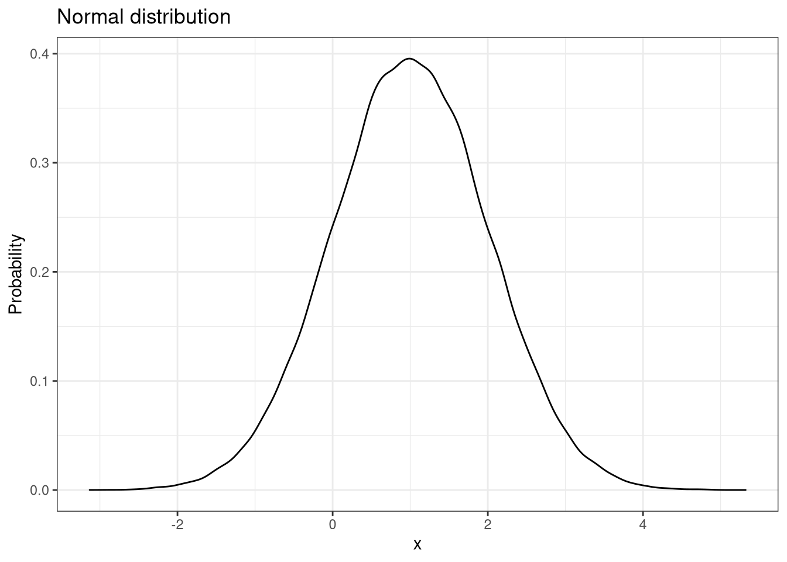
Code
library(ggplot2)# Plotting a q-q plotdata <-data.frame(events =0:100000, pdf =rnorm(n =0:100000, 1))ggplot(data, aes(sample = pdf)) +stat_qq() +stat_qq_line() +labs(title ="Q-Q plot",subtitle ="For a normal distribution, Q-Q plot is a straight line",x ="Normal quantiles",y ="Data quantiles") +theme_bw()
If our data is normally distributed then it is easier to do statistical analyses with it. Finding a correlation between two normally distributed variables also becomes straightforward. In R, we can use the cor() function to find the correlation estimate between two variables. The correlation coefficient (r) lies between -1 and 1. The magnitude of the ‘r’ denotes the strength of the relationship and the sign denotes the type of relationship.
Correlation coefficient (r) = 0: No relationship between the two variables
Correlation coefficient (r) = -1: Strong negative relationship between the two variables
Correlation coefficient (r) = 1: Strong positive relationship between the two variables
data <-data.frame(x =0:100, y =100:200)# Plotting x and yggplot(data, aes(x,y)) +geom_point() +labs(title ="Relationship between x and y") +theme_bw()
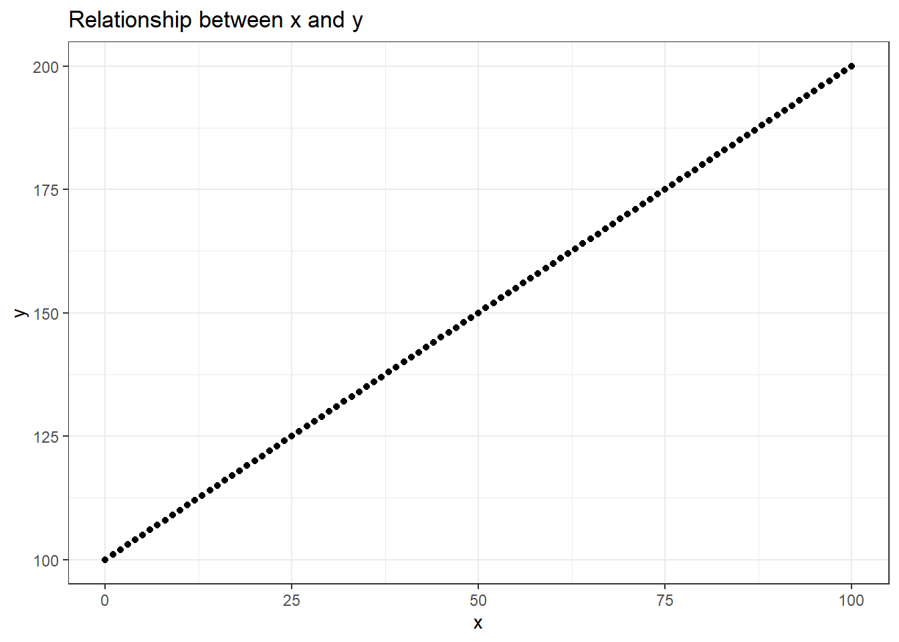
# Finding correlation between x and ycor(data$x, data$y)
[1] 1
We have a linear relationship between x and y. And we got a correlation coefficient value of 1 (in real life scenario this is next to impossible to obtain). But there are instances where we would not get a straightforward linear relationship between two variables and we would have to transform our data to make it easier to find the relationship. Before getting into data transformation, let us see different types of skewed distribution and plot their Q-Q plots.
9.2 Negative or left-skewed distribution
Given below are graphs showing negative or left-skewed distribution, and its Q-Q plot.
library(ggplot2)# Plotting a negative or left skewed distributiondata.frame(x =0:10000, y =rbeta(n =0:10000, 5, 2)) %>%ggplot(aes(y)) +geom_density() +labs(title ="Negative or left skewed distribution",x ="x",y ="Density") +theme_bw()
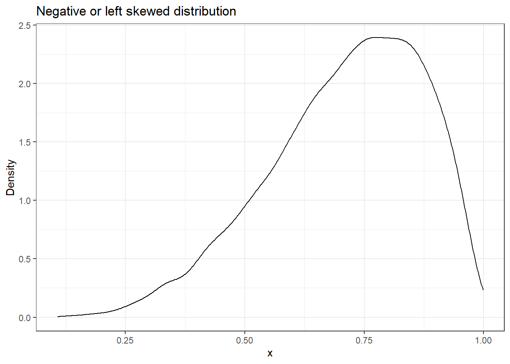
Code
library(ggplot2)# Plotting a q-q plotdata <-data.frame(x =0:10000, y =rbeta(n =0:10000, 5, 2))ggplot(data, aes(sample = y)) +stat_qq() +stat_qq_line() +labs(title ="Q-Q plot for negative or left skewed distribution",subtitle ="The tail ends of Q-Q plot is bend towards the right side of the straight line",x ="Normal quantiles",y ="Data quantiles") +theme_bw()
You can see that for negative or left-skewed distribution, the tail ends of the Q-Q plot are bent towards the right side of the straight line.
library(ggplot2)# Plotting a positive or right skewed distributiondata.frame(x =0:10000, y =rbeta(n =0:10000, 2, 5)) %>%ggplot(aes(y)) +geom_density() +labs(title ="Positive or right skewed distribution",x ="x",y ="Density") +theme_bw()
Code
library(ggplot2)# Plotting a q-q plotdata <-data.frame(x =0:10000, y =rbeta(n =0:10000, 2, 5))ggplot(data, aes(sample = y)) +stat_qq() +stat_qq_line() +labs(title ="Q-Q plot for positive or right skewed distribution",subtitle ="The tail ends of Q-Q plot is bend towards the left side of the straight line",x ="Normal quantiles",y ="Data quantiles") +theme_bw()
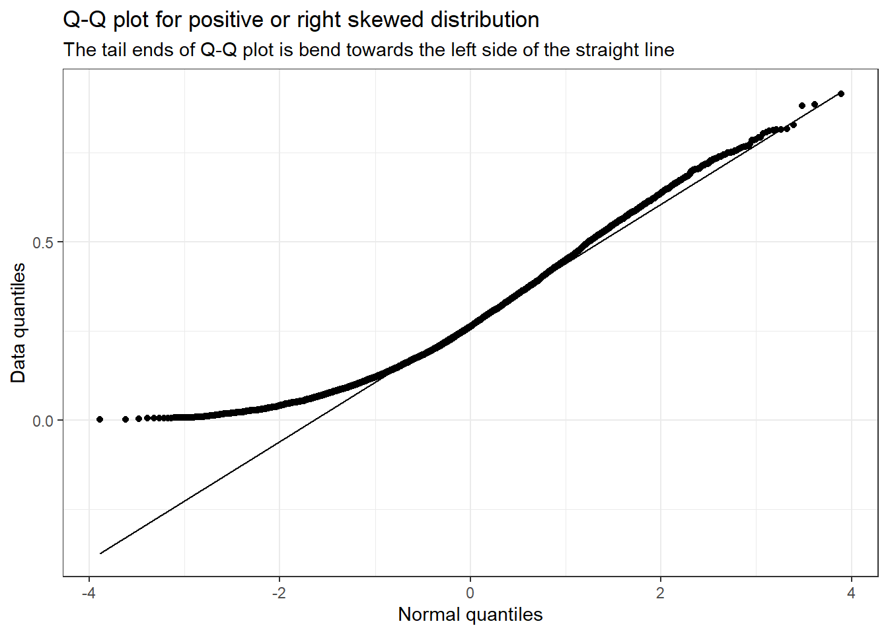
You can see that for positive or right-skewed distribution, the tail ends of the Q-Q plot bend towards the left side of the straight line.
9.4 Different types data transformations
Depending on the nature of the dataset, different transformations can be applied to better visualize the relationship between two variables. Given below are different data transformation functions which are used depending on the skewness of the data (S 2010).
For right-skewed data, the standard deviation is proportional to the mean. In this case, logarithmic transformation (log(x)) works best. The square root transformation (\sqrt{x}) can also be used.
If the variance is proportional to the mean (in the case of Poisson distributions), square root transformation (\sqrt{x}) is preferred. This happens more in the case of variables which are measured as counts e.g., number of malignant cells in a microscopic field, number of deaths from swine flu, etc.
If the standard deviation is proportional to the mean squared, a reciprocal transformation (\frac{1}{x}) can be performed. Reciprocal transformation is carried out for highly variable quantities such as serum creatinine.
Other transformations include the square transformation (x^2) and exponential transformation (e^x) which can be used for left skewed data.
Different types of data transformations and their usage criteria
Transformation
When is it used?
When it cannot be used?
Logarithmic transformation (log(x))
Scaling large values to small values and making them fit a normal distribution
Cannot be used when there are 0 and negative values. Can be circumvented by subtracting the whole dataset with the min value in the database
Square root transformation (\sqrt{x})
To inflate small values and to stabilize large values
Not applicable to negative values
Reciprocal transformation (\frac{1}{x})
Highly varying data
Not applicable when there are zero values
10 Conlusion
We have completed the basics of statistics and also learned how to implement them in R. In summary we learned about;
Descriptive and Inferential statistics.
Measures of centre: mean, median and mode
Measures of spread: variance, standard deviation, mean absolute deviation and interquartile range
Distributions: binomial, normal, standard normal, Poisson, exponential, student’s t and log-normal
Central limit theorem
Data transformation: Skewness, Q-Q plot and data transformation functions
In the next chapter will we see how to use R for hypothesis testing.
---title: "Introductory statistics with R"description: "Learn the basics of statistics using R"date: "08/31/2022"date-modified: last-modifiedformat: html: css: - https://cdn.knightlab.com/libs/juxtapose/latest/css/juxtapose.cssimage: images/intro_stat.pngcategories: [basic statistics]bibliography: intro_stat.bibfilters: - social-shareshare: permalink: "https://sciquest.netlify.app/tutorials/stat_basic/intro_stat.html" description: "Introductory statistics with R" twitter: true facebook: true reddit: true stumble: true tumblr: true linkedin: true email: true---:::{.callout-note}## TL;DRIn this article you will learn;1. Descriptive and Inferential statistics2. Measures of centre: mean, median and mode3. Measures of spread: variance, standard deviation, mean absolute deviation and interquartile range4. Distributions: binomial, normal, standard normal, Poisson, exponential, student's t and log-normal5. Central limit theorem6. Data transformation: Skewness, Q-Q plot and data transformation functions:::## IntroductionThis tutorial will cover the basics of statistics and help you to utilize those concepts in R. Most of the topics that I will be discussing here is from what I learned from my undergraduate course: **Biological Data Analysis**, which was offered in 2019 at IISER-TVM. Then by reading online and by taking courses at DataCamp I further continued my journey to master statistics on my own. If you find any mistakes in any of the concepts that I have discussed in this tutorial, kindly raise it as a GitHub issue or comment them down or you can even mail me (the mail address is given in the footnote). Without further ado let us start!## Why do we need statistics?If you are a student and are currently pursuing an undergrad course in college or a university, then chances are that you would come across scientific publications in your respective fields. And while you are reading them, for most of the articles, there will be a separate section highlighting the statistical methods used in the published study. So what was the purpose of it? One of the most important purpose statistical tests fulfil is that it gives evidence to test if the results given in the study occurred due to pure chance alone or due to the experiment that the authors of the paper did.## Descriptive and Inferential statisticsStatistics is broadly categorized into two: *Descriptive statistics* and *Inferential statistics**Descriptive statistics*: Descriptive statistics are used to describe and summarise data. Suppose we have data on the food preferences of a bird in a small area of an island. We found that out of the 100 birds we observed, 20 of them prefer fruits (20%), 30 of them prefer insects (30%) and the remaining 50 prefer reptiles (50%). So with the available data, this is what we know about the birds we have observed.*Inferential statistics*: Inferential statistics, as suggested by the name is used to make inferences about the population using the sample collected from that population. Using the above data, we can make inferences about the food preferences of all the birds on the island. Thus, we can find what is the percentage of birds on that island that would be preferring reptiles to eat.## A note on dataData can be broadly categorised into two: *Quantitative* and *Qualitative*. Quantitative data are numerical values and can be continuous or discrete. They can also be arranged in a defined order (as they are numbers) and are thus called ordinal data. Qualitative data are often categorical data which can be either ordinal or nominal.| Examples of Quantitative data | Examples of Qualitative data ||---|---|| Speed of train | Survival data: Alive or Dead || Age of a person | Outcomes: Win or Lose || Proportion of visits to a shop | Choices: Kannur or Pune || Change in prices of an item | Marital status: Married or Unmarried || Growth of bacteria | Ordered choices: Agree, Somewhat agree, Disagree |: Examples of quantitative and qualitative data## Measures of centreA good way to summarise data is by looking at their measure of the centre which can be *mean*, *median* and *mode*. I am sure that you all know how to find these measures. * Mean is best used to describe data that are normally distributed or don't have any outliers. * Median is best for data with non-normal distribution as it is not affected much by outliers in the data. For a median value of 10, what it means is that 50% of our data is above the value of 10 and 50% of the remaining data is below the value of 10. * Mode is best used if our data have a lot of repeated values and is best used for categorical data as for calculating mode, the data does not need to be in ordinal scale.Let us visualize the measure of centres.We will use the `penguins` dataset from the `{palmerpenguins}` package in R. Let's plot the distribution curve for the "body mass" of the "Chinstrap" species of penguins. In R, function for calculating mean is `mean()` and for median is `median()`. There is no base function to calculate the mode, so we will write a function in R which can calculate the mode value.```{r}#| code-fold: trueif (!require(palmerpenguins)) install.packages('palmerpenguins')library(ggplot2)library(dplyr)library(palmerpenguins)# Creating a function to calculate the mode valuegetmode <-function(v) { uniqv <-unique(v) uniqv[which.max(tabulate(match(v, uniqv)))]}# Calculating the mean, median and modepen_avg <- penguins %>%filter(species =="Chinstrap") %>%summarise(mean =mean(body_mass_g),median =median(body_mass_g),mode =getmode(body_mass_g))# Plotting the datapenguins %>%filter(species =="Chinstrap") %>%ggplot(aes(x = body_mass_g)) +xlab("Body Mass (g)") +ylab("Density") +ggtitle("Body mass distribution") +geom_density(fill ="grey") +labs(subtitle =paste0("N=",penguins %>%filter(species =="Chinstrap") %>%nrow())) +geom_vline(aes(xintercept = pen_avg$mean, colour ="red")) +geom_text(aes(x=pen_avg$mean, label="mean", y=4e-04), colour="red", angle=90, vjust =1.2, text=element_text(size=11)) +geom_vline(aes(xintercept = pen_avg$median, colour ="blue")) +geom_text(aes(x=pen_avg$median, label="median", y=4e-04), colour="blue", angle=90, vjust =-1.2, text=element_text(size=11)) +geom_vline(aes(xintercept = pen_avg$mode, colour ="green")) +geom_text(aes(x=pen_avg$mode, label="mode", y=4e-04), colour="green", angle=90, vjust =-1.2, text=element_text(size=11)) +theme_bw() +theme(legend.position="none")```For a normal distribution, which is what we have in this case, the mean, median and mode are all the same value and are in the middle of the curve. For a skewed dataset or a dataset with outliers, all the measures of the centre will be different and they depend on the skewness of the data.Consider the plot of the `diamonds` dataset from the `{ggplot2}` package in R. The data is skewed in nature.```{r}#| code-fold: truelibrary(tidyverse)# Create function to get modegetmode <-function(v) { uniqv <-unique(v) uniqv[which.max(tabulate(match(v, uniqv)))]}# Plotting the datadiamonds %>%filter(cut =="Fair") %>%ggplot(aes(x = carat)) +xlab("carats") +ylab("Density") +ggtitle("Diamond carat distribution") +geom_density(fill ="gold") +labs(subtitle =paste0("N=",diamonds %>%filter(cut =="Fair") %>%nrow())) +geom_vline(aes(xintercept =mean(diamonds$carat), colour ="red")) +geom_text(aes(x=mean(diamonds$carat), label="mean", y=1), colour="red", angle=90, vjust =1.2, text=element_text(size=11)) +geom_vline(aes(xintercept =median(diamonds$carat), colour ="blue")) +geom_text(aes(x=median(diamonds$carat), label="median", y=1), colour="blue", angle=90, vjust =-1.2, text=element_text(size=11)) +geom_vline(aes(xintercept =getmode(diamonds$carat), colour ="green")) +geom_text(aes(x=getmode(diamonds$carat), label="mode", y=1), colour="green", angle=90, vjust =-1.2, text=element_text(size=11)) +theme_bw() +theme(legend.position="none")```Here the curve is right-skewed, as the mean is skewed towards the right side of the mode value. If it was the other way around then the curve will be called left-skewed.## Measures of spreadLike the measures of the centre, we can also summarise the data by measuring the spread of the data. Spread tell us how close or how far each of the data points is distributed in the dataset. There are many methods to measure the spread of the data, let us look at each of them one by one.### VarianceThe variance of data is defined as the average squared difference from the mean of the data. It tells us how far each of our data points is from the mean value.The formula for finding the variance is as follows;$$s = \sigma^2 = \frac{\sum (x_{i} - \bar{x})^{2}}{n - 1}$$Where $s$ is `sample variance`, $x_{i}$ is your data point, $\bar{x}$ is mean, $n$ is the sample size and $n-1$ is called as the degrees of freedom. Here $\sigma$ is the standard deviation which is explained below.The function to calculate variance in R is `var()````{r}library(palmerpenguins)# Calculating the variance of bill lengthvar(penguins$bill_length_mm, na.rm = T)```### Standard deviationStandard deviation like the variance tells us how much each of our data points is spread around the mean and is easier to understand as they are not being squared like in the case with variance.The formula to calculate the standard deviation of the mean is;$$\sigma = \sqrt{\frac{\sum (x_{i} - \bar{x})^{2}}{n - 1}}$$ Where $\sigma$ is the standard deviation, $x_{i}$ is your data point, $\bar{x}$ is the sample mean, $n$ is the sample size and $n-1$ is called the degrees of freedom. Here $\sigma^2$ gives the variance of the data.The function to calculate variance in R is `sd()````{r}library(palmerpenguins)# Calculating the variance of bill lengthsd(penguins$bill_length_mm, na.rm = T)# Calculating the variance(sd(penguins$bill_length_mm, na.rm = T))^2```### Mean absolute deviationMean absolute deviation takes the absolute value of the distances to the mean and then takes the mean of those differences. While this is similar to standard deviation, it's not the same. Standard deviation squares distances, so longer distances are penalized more than shorter ones, while mean absolute deviation penalizes each distance equally. The formula to calculate mean absolute deviation is;$$MAD = (\frac{1}{n})\sum_{i=1}^{n}\left | x_{i} - \bar{x} \right |$$Where $n$ is the sample size, $x_{i}$ is your data point, $\bar{x}$ is the sample mean, $n$ is the sample size and $n-1$ is called the degrees of freedom. Here $\sigma^2$ gives the variance of the data.To calculate absolute deviation in R, there is no base function to do so, so we have to manually calculate it.```{r}library(palmerpenguins)# Calculating the distancesdistances <- penguins$bill_length_mm -mean(penguins$bill_length_mm, na.rm = T)# Calculating the mean absolute deviationmean(abs(distances), na.rm = T)```### Interquartile range (IQR)Quantiles of data can be calculated using the `quantile()` function in R. By default, the data is split into four equal parts which is why it's called a 'quartile'.```{r}library(palmerpenguins)# Calculating the quartilequantile(penguins$bill_length_mm, na.rm = T)```Here the data is split into four equal parts which are called the quartiles of the data. In the output, we can see that 25% of the data points are between 32.1 and 39.225, and another 25% of the data points are between 39.225 and 44.450 and so on. Here the 50% quartile is 44.450 which is the median value.We can manually specify the splitting. Below given code splits the data into five parts and hence is called a quantile. The splitting is specified by the argument `probs` inside the `quantile()` function. You can either manually put the proportions of the split or use the `seq()` function to provide the proportions. ```{r}library(palmerpenguins)# Calculating the quantilequantile(penguins$bill_length_mm, probs =seq(0, 1, 0.2), na.rm = T)```> IQR is the distance between the second quartile and the third quartile of the data or the height of the box plot.The interquartile range can be calculated using the `IQR()` function.```{r}# Finding the IQRIQR(penguins$bill_length_mm, na.rm = T)```The interquartile range is overall the best way to summarise the spread of the data and forms the crux of a boxplot design.```{r}library(palmerpenguins)# Plotting a boxplotggplot(penguins, aes(species, body_mass_g, fill = species)) +geom_boxplot() +labs(title ="Body masses of three different species of penguins",x ="Penguin species",y ="Body mass (g)") +theme_bw()```In the box plot, the middle dark line is the median or the 50% quartile or the second quartile, the bottom of the box is the first quartile (25%) and the top of the box is the third quartile (75%). You can see two data points outside the box for 'Chinstrap' species, these are outliers. What makes a data point an outlier? That's where the whiskers of the box come in. Typically the outliers are calculated in the following format;* Outliers: $x_i < Q_1 - 1.5 * IQR$ or $x_i > Q_3 + 1.5 * IQR$Here $Q_1$ is the first quartile, $Q_3$ is the third quartile and $IQR$ is the interquartile distance.## DistributionsWe will come across different types of distributions while analysing data. Let us look at each of them.### Binomial distributionThe binomial distribution describes the probability of the number of successes in a sequence of independent trials. You might have seen this type of distribution in your introductory probability classes. It is easy to visualize this using a coin toss event. Imagine we have a fair coin, we are tossing it to see the number of times we get heads. So here getting a head is a success and getting a tail is a failure.In R we can simulate this using the `rbinom()` function. We want to see the results when we are tossing a coin once. Since the functions take random values, to be concise I will set a seed so that you can repeat the codes that I have given to get the same results.```{r}# Setting seedset.seed(123)# Tossing a coin one timerbinom(1,1,0.5)```We got a value of zero, which corresponds to the event of getting a tail. Here, in the `rbinom()` function, we have the following syntax;`rbinom(no. of flips, no. of coins, the probability of getting a head)`To see the number of heads we get by flipping a single coin three times would be with equal chances of getting a head and a tail is;```{r}# Setting seedset.seed(123)# Tossing a one coins three timesrbinom(3,1,0.5)```In the first flip we got zero heads, in the second we got one head and in the third, we got zero head.Checking to see how total number of heads we get by flipping three coins one time;```{r}# Setting seedset.seed(258)# Tossing a three coins one timerbinom(1,3,0.5)```So we get a total of 2 heads when we flipped three coins one time.Checking to see the total number of heads we get by flipping four coins three times.```{r}# Setting seedset.seed(258)# Tossing a four coins three timesrbinom(3,4,0.5)```In the first flip of three coins, we got three heads, in the second we got again three heads and lastly, we got 2 heads.We can also calculate the results if our coin is biased.Checking to see the total number of heads we get by flipping four coins three times, the coin only has a 25% probability of falling on heads.```{r}# Setting seedset.seed(258)# Tossing a four coins three times, but coins is unfairrbinom(3,4,0.25)```Hence the `rbinom()` function is used to sample from a binomial distribution.What about finding discrete probabilities like are chance of getting 7 heads if we flipped a coin 10 times? To find that we use the function `dbinom()`.Checking the probability of getting exactly 7 heads while tossing a coin 10 times;```{r}# Setting seedset.seed(258)# Probability of getting 7 heads in 10 coin flips# dbinom(no. of heads, no. of flips, chance of getting a head)dbinom(7,10,0.5)```Likewise, we can also find the probability of getting 7 or fewer heads while tossing the 10 times using the `pbinom()` function.```{r}# Setting seedset.seed(258)# Probability of getting 7 heads in 10 coin flips# pbinom(no. of heads, no. of flips, chance of getting a head)pbinom(7,10,0.5)```To find the probability of getting more than 7 heads in 10 trials would be;```{r}# Setting seedset.seed(258)# Probability of getting more than 7 heads in 10 coin flips# Set lower.tail = FALSEpbinom(7,10,0.5, lower.tail = F)# Alternatively you find it in the following also1-pbinom(7,10,0.5)```The expected value of an event would be equal to; $E = n*p$Where $n$ is the number of trails and $p$ is the probability of successes.Now let us visualize the binomial distribution using the function we have covered till now;```{r}#| code-fold: truelibrary(dplyr)library(ggplot2)# Plotting a binomial distributiondata.frame(heads =0:10, pdf =dbinom(0:10, 10, prob =0.5)) %>%ggplot(aes(x =factor(heads), y = pdf)) +geom_col() +geom_text(aes(label =round(pdf,2), y = pdf +0.01),position =position_dodge(0.9),size =3,vjust =0 ) +labs(title ="Probability of X = x successes.",subtitle ="Binomial distribution (n = 10, p = 0.5)",x ="No of heads (successes)",y ="Probability") +theme_bw()```This is a binomial distribution showing the probability of getting heads when a single coin is flipped 10 times. For a fair coin, we get the expected probability that most times we will get 5 heads when the coin is flipped 10 times.### Normal distributionWe saw an example of the normal distribution when we were discussing the measures of the centre. The normal distribution or also known as the Gaussian distribution is one of the most important distributions in statistics as it is one of the requirements the data has to fulfil for numerous statistical analyses.Let us look at the `penguins` dataset from the `{palmerpenguins}` package in R. We will plot the distribution curve for the "body mass" of the "Chinstrap" species of penguins.```{r}#| code-fold: truelibrary(ggplot2)library(dplyr)library(palmerpenguins)# Plotting a normal distributionpenguins %>%filter(species =="Chinstrap") %>%ggplot(aes(x = body_mass_g)) +xlab("Body Mass (g)") +ylab("Density") +ggtitle("Body mass distribution of Chinstrap penguins") +geom_density(fill ="darkred") +labs(subtitle =paste0("N=", penguins %>%filter(species =="Chinstrap") %>%nrow())) +theme_bw()```As you can see, the data distribution closely resembles a "bell-shaped" curve. On closer look, you can also see that the area under the curve is almost symmetrical to both sides and there is only a single peak present. We can also visualize the *variance* of the data by looking at the width of the curve. A wider curve means variance is higher and a narrower curve means variance in the data is smaller. Also for a normal distribution, there are no outliers present. We saw earlier that the mean, median and mode for a normal distribution are the same.As seen earlier, we can use the `rnorm()` function to sample from the normal distribution. The syntax for the function is as follows;`rnorm(number of samples, mean, sd)`Many real-life datasets closely resemble a normal distribution, like the one which is plotted above. Since they approximate a normal distribution, we can use different base functions in R to answer some interesting questions.* What percentage of Chinstrap penguins are below 3500g? To get this answer we approximate the body mass distribution of Chinstrap penguins to a normal distribution and use the `pnrom()` function.```{r}library(dplyr)library(palmerpenguins)# Finding mean and sd of the body masses of Chinstrap penguinschin_body_mass_summary <- penguins %>%filter(species =="Chinstrap") %>%summarise(mean_body_mass =mean(body_mass_g),sd_body_mass =sd(body_mass_g))# Finding the percentage of penguins below 3500gpnorm(3500, mean = chin_body_mass_summary$mean_body_mass,sd = chin_body_mass_summary$sd_body_mass)```So there are about 27% of penguins who have their body mass below 3500g* What percentage of Chinstrap penguins are above 4000g? To get this answer we again use the `pnrom()` function but use the `lower.tail = F` argument.```{r}library(dplyr)library(palmerpenguins)# Finding mean and sd of the body masses of Chinstrap penguinschin_body_mass_summary <- penguins %>%filter(species =="Chinstrap") %>%summarise(mean_body_mass =mean(body_mass_g),sd_body_mass =sd(body_mass_g))# Finding the percentage of penguins above 4000gpnorm(4000, mean = chin_body_mass_summary$mean_body_mass,sd = chin_body_mass_summary$sd_body_mass,lower.tail = F)```There are about 24% of penguins in the dataset have a body mass above 4000g.* What percentage of Chinstrap penguins have their body masses between 3000g and 4000g? To find this answer, we first find the percentage of penguins who have masses below 3000g and then below 4000g. Then we subtract them to get our answer.```{r}library(dplyr)library(palmerpenguins)# Finding mean and sd of the body masses of Chinstrap penguinschin_body_mass_summary <- penguins %>%filter(species =="Chinstrap") %>%summarise(mean_body_mass =mean(body_mass_g),sd_body_mass =sd(body_mass_g))# Finding the percentage of penguins between 3000g and 4000gbelow_3000 <-pnorm(3000, mean = chin_body_mass_summary$mean_body_mass,sd = chin_body_mass_summary$sd_body_mass)below_4000 <-pnorm(4000, mean = chin_body_mass_summary$mean_body_mass,sd = chin_body_mass_summary$sd_body_mass)below_4000 - below_3000```About 73% of penguins have body masses between 3000g and 4000g.* At what body mass is 60% of the penguins weigh lower than? We can get the answer using the `qnorm()` function.```{r}library(dplyr)library(palmerpenguins)# Finding mean and sd of the body masses of Chinstrap penguinschin_body_mass_summary <- penguins %>%filter(species =="Chinstrap") %>%summarise(mean_body_mass =mean(body_mass_g),sd_body_mass =sd(body_mass_g))# Body mass at which 60% of the penguins weigh lower thanqnorm(0.6, mean = chin_body_mass_summary$mean_body_mass,sd = chin_body_mass_summary$sd_body_mass)```We find that 60% of the penguins weigh lower than 3830g.* At what body mass is 30% of the penguins weigh greater than? We can get the answer using the `qnorm()` function.```{r}library(dplyr)library(palmerpenguins)# Finding mean and sd of the body masses of Chinstrap penguinschin_body_mass_summary <- penguins %>%filter(species =="Chinstrap") %>%summarise(mean_body_mass =mean(body_mass_g),sd_body_mass =sd(body_mass_g))# Body mass at which 30% of the penguins weigh greater thanqnorm(0.3, mean = chin_body_mass_summary$mean_body_mass,sd = chin_body_mass_summary$sd_body_mass, lower.tail = F)```We find that 30% of the penguins weigh greater than 3935g.### Standard normal distributionA normal distribution with mean ($\bar{x}$) = 0 and variance ($\sigma^{2}$) = 1 is called *standard normal distribution* or a *z-distribution*. With the help of standard deviation, we can split the area under the curve of standard normal distribution into three parts. This partitioning of the area is known as the *68–95–99.7 rule*. What it means is that;- 68% of the data will lie within $±\sigma$ from $\bar{x}$ or they lie within 1 standard deviation from the mean- 95% of the data will lie within $±2\sigma$ from $\bar{x}$ or they lie within 2 standard deviations from the mean- 99.7% of the data will lie within $±3\sigma$ from $\bar{x}$ or they lie within 3 standard deviations from the mean```{r}#| code-fold: truelibrary(ggplot2)# Plotting a standard normal distributionggplot(data.frame(x =c(-4,4)), aes(x)) +# Plot the pdfstat_function(fun = dnorm,n =101, args =list(mean =0, sd =1),geom ="area", color ="grey75", fill ="grey75", alpha =0.4) +# Shade below -2stat_function(fun =function(x) ifelse(x <=-2, dnorm(x, mean =0, sd =1), NA),aes(x),geom ="area", color =NA, fill ="grey40", alpha =0.7) +# Shade below -1stat_function(fun =function(x) ifelse(x <=-1, dnorm(x, mean =0, sd =1), NA),aes(x),geom ="area", color =NA, fill ="grey40", alpha =0.7) +# Shade above 2stat_function(fun =function(x) ifelse(x >=2, dnorm(x, mean =0, sd =1), NA),aes(x),geom ="area", color =NA, fill ="grey40", alpha =0.7) +# Shade above 1stat_function(fun =function(x) ifelse(x >=1, dnorm(x, mean =0, sd =1), NA),aes(x),geom ="area", color =NA, fill ="grey40", alpha =0.7) +ggtitle("The standard normal distribution") +xlab(expression(italic(z))) +ylab(expression(paste("Density, ", italic(f(z))))) +geom_text(x =0.5, y =0.25, size =3.5, fontface ="bold",label ="34.1%") +geom_text(x =-0.5, y =0.25, size =3.5, fontface ="bold",label ="34.1%") +geom_text(x =1.5, y =0.05, size =3.5, fontface ="bold",label ="13.6%") +geom_text(x =-1.5, y =0.05, size =3.5, fontface ="bold",label ="13.6%") +geom_text(x =2.3, y =0.01, size =3.5, fontface ="bold",label ="2.1%") +geom_text(x =-2.3, y =0.01, size =3.5, fontface ="bold",label ="2.1%") +geom_vline(xintercept=0, col ="red") +annotate("text", x=-0.25, y=0.15, label="Mean(x̅) = 0", angle=90) +theme_bw()```1. The lightest grey area contains 68% (~ 34.1 + 34.1) of the data and it corresponds to $\bar{x}±\sigma$.2. The second lightest grey area contains 95% (~ 34.1 + 34.1 + 13.6 + 13.6) and it corresponds to $\bar{x}±2\sigma$.3. The darkest grey area contains 99.7% (~ 34.1 + 34.1 + 13.6 + 13.6 + 2.1 + 2.1) and it corresponds to $\bar{x}±3\sigma$.4. For a standard normal distribution; the area under the curve is 1, the mean is 0 and the variance is 1.### Poisson distributionPoisson distribution describe poisson processes. A Poisson process is when events happen at a certain rate but are completely random. For example; the number of people visiting the hospital, the number of candies sold in a shop, and the number of meteors falling on earth in a year. Thus the Poisson distribution describes the probability of some number of events happening over a fixed time. Thus the Poisson distribution is only applicable for datasets containing 0 and positive integers. It won't work with negative or decimal values.The Poisson distribution has the same value for its mean and variance and is denoted by $\lambda$.As seen in earlier distributions, the function to sample from a Poisson distribution is `rpois()`. Given below is an example of a Poisson distribution for $\lambda = 3$, where the number of events ranges from 0 to 10.```{r}#| code-fold: truelibrary(dplyr)library(ggplot2)# Plotting a poisson distributiondata.frame(events =0:10, pdf =dpois(x =0:10, lambda =3)) %>%ggplot(aes(x =factor(events), y = pdf)) +geom_col() +geom_text(aes(label =round(pdf,2), y = pdf +0.01),position =position_dodge(0.9),size =3,vjust =0 ) +labs(title ="Probability of X = x Events",subtitle ="Poisson distribution (λ = 3)",x ="Events (x)",y ="Probability") +theme_bw()```Let us take a scenario where the number of people visiting the hospital per week is 25. This is a Poisson process and we can model this scenario using a Poisson distribution. Here $\lambda = 25$. As seen earlier, we can use different base functions in R to answer different questions concerning the Poisson distribution.* What is the probability that 20 people will visit the hospital in a week given that 25 people on average visit the hospital in a week?```{r}# Calculating the probability that 20 people will visit the hospital in a weekdpois(20, lambda =25)```We get a 5.2% chance that 20 people will visit the hospital in a week.* What is the probability that 15 or fewer people will visit the hospital given that 25 people on average visit the hospital in a week? To get the answer to this question, we use the `ppois()` function.```{r}# Calculating the probability that 15 or fewer people will visit the hospital in a weekppois(15, lambda =25)```There is a 2.2% chance that 15 or fewer people will visit the hospital.* What is the probability that more than 5 people will visit the hospital given that 25 people on average visit the hospital in a week? To get the answer to this question, we use the `ppois()` function but with the `lower.tail = F` argument.```{r}# Calculating the probability that more than 5 people will visit the hospital in a weekppois(5, lambda =25, lower.tail = F)```We get a 100% chance that more than 5 people will visit the hospital.### Exponential distributionThe exponential distribution describes the probability distribution of time between events in a Poisson process. Exponential distribution can be used to predict the probability of waiting 10 minutes between two visitors in a hospital, the probability of elapsing 5 minutes between the sale of two candies, probability of having 6 months between two meteor showers on earth.Some real-life examples which exhibit exponential distribution are bacterial growth rate, oil production, call duration, and my parent's patience (quickly decaying curve).The exponential distribution is also described by the same parameter $\lambda$ as that of the Poisson distribution but it's measured as a 'rate'. ```{r}#| code-fold: truelibrary(dplyr)library(ggplot2)# Plotting a exponential distributionx <-seq(0, 20, length.out=1000)dat <-data.frame(time =x, px=dexp(x, rate=0.6))ggplot(dat, aes(x=x, y=px)) +geom_line() +labs(title ="Probability of X = x Time",subtitle ="Exponential distribution (λ = 0.6 or rate = 0.6)",x ="Time",y ="Probability") +theme_bw()```You can use the function `rexp()` to sample across an exponential distribution, similarly use `dexp()` and `pexp()` to find the probability of events like shown for other distributions.### Student's t distributionThe student's t distribution or simply called the t distribution is a probability distribution similar to a normal distribution but is estimated with a low sample size collected from a population whose standard deviation is unknown. The parameter in estimating the t-distribution is called the degrees of freedom.```{r}#| code-fold: true# Plotting the t distribution and comparing to the standard normal distributionggplot(data =data.frame(x =c(-4,4)), aes(x)) +stat_function(fun =function(x) dt(x, df =2),aes(color ="t")) +stat_function(fun = dnorm, n =101, args =list(mean =0, sd =1),aes(color ="normal")) +labs(title ="Student's t-distribution vs Standard normal distribution",subtitle ="t-distribution (degrees of freedom = 2)",x ="t or z",y ="Probability") +scale_colour_manual("Distribution", values =c("red", "blue")) +theme_bw()```In the graph shown above, the t-distribution with degrees of freedom = 2 is plotted alongside the standard normal distribution. You can see that both the tail ends of the t-distribution are thicker as compared to the normal distribution and hence for the t-distribution the values are more away from the mean. But as the degrees of freedom increase, the t-distribution tends to become similar to that of a normal distribution.```{r}#| code-fold: true# Plotting the t distribution and comparing to the standard normal distributionggplot(data =data.frame(x =c(-4,4)), aes(x)) +stat_function(fun =function(x) dt(x, df =2),aes(color ="t_2")) +stat_function(fun =function(x) dt(x, df =25),aes(color ="t_25")) +stat_function(fun = dnorm, n =101, args =list(mean =0, sd =1),aes(color ="normal")) +labs(title ="Student's t-distributions vs Standard normal distribution",subtitle ="t-distribution (df = 2 and df = 25)",x ="t or z",y ="Probability") +scale_colour_manual("Distribution", values =c("red", "blue", "darkgreen")) +theme_bw()```In the above graph, you can see that the t-distribution with degrees of freedom = 25 (green) is very similar to the standard normal distribution.### Log-normal distributionThe log-normal distribution is a probability distribution of variable 'x' whose log-transformed values follow a normal distribution. Like the normal distribution, log-normal distribution has a mean value and a standard deviation which are estimated from log-transformed values. Some real-life examples which follow the log-normal distribution are; the length of chess games, blood pressure in adults, and the number of hospitalizations in the 2003 SARS outbreak.```{r}#| code-fold: truelibrary(dplyr)library(ggplot2)# Plotting a log normal distributionggplot(data =data.frame(x =c(-4,4)), aes(x)) +stat_function(fun = dlnorm, args =list(meanlog =2.2, sdlog =0.44), colour ="red") +labs(title ="Log normal distribution",subtitle ="Log normal distribution [mean_log = 2.2 and sd_log = 0.44]",x ="x",y ="Probability") +theme_bw()```## The central limit theoremImagine we are rolling a die 5 times and we are calculating the mean of the results.```{r}die <-c(1,2,3,4,5,6)# Rolling a die 5 timessample_of_5 <-sample(die, 5, replace = T)sample_of_5# Calculating the mean fo the resultsmean(sample_of_5)```Now imagine we are repeating the experiment of rolling a die 5 times for 10 trials and then we are calculating the mean for each trial.```{r}library(dplyr)die <-c(1,2,3,4,5,6)# Rolling a die 5 times and repreating it 10 timessample_of_5 <-replicate(10, sample(die, 5, replace = T) %>%mean())# Mean values for the 10 trialssample_of_5```Let us go further and repeat this experiment for 100 and 1000 trials and visualize the means.::: {.panel-tabset}# For 10 trials```{r}#| code-fold: trueset.seed(123)library(dplyr)library(ggplot2)die <-c(1,2,3,4,5,6)# Rolling a die 5 times and repeating it 10 timessample_of_5 <-replicate(10, sample(die, 5, replace = T) %>%mean())# Plotting the graphhist(sample_of_5, xlab ="Sample means")```# For 100 trials```{r}#| code-fold: trueset.seed(123)library(dplyr)library(ggplot2)die <-c(1,2,3,4,5,6)# Rolling a die 5 times and repeating it 10 timessample_of_5 <-replicate(100, sample(die, 5, replace = T) %>%mean())# Plotting the graphhist(sample_of_5, xlab ="Sample means")```# For 1000 trials```{r}#| code-fold: trueset.seed(123)library(dplyr)library(ggplot2)die <-c(1,2,3,4,5,6)# Rolling a die 5 times and repeating it 10 timessample_of_5 <-replicate(1000, sample(die, 5, replace = T) %>%mean())# Plotting the graphhist(sample_of_5, xlab ="Sample means")```:::You can see that as the number of trials increases, the distribution of means reaches a normal distribution. This is a result of the central limit theorem.> The central limit theorem states that a sampling distribution of a statistic will approach a normal distribution as the number of trials increases, provided that the samples are randomly sampled and are independent.In the above case, we can see that the mean of the samples approaches the central value or the 'expected value' of 3.5. The central limit theorem also applies to other statistics such as the standard deviation.::: {.panel-tabset}# For 10 trials```{r}#| code-fold: trueset.seed(123)library(dplyr)library(ggplot2)die <-c(1,2,3,4,5,6)# Rolling a die 5 times and repeating it 10 timessample_of_5 <-replicate(10, sample(die, 5, replace = T) %>%sd())# Plotting the graphhist(sample_of_5, xlab ="Sample standard deviation")```# For 100 trials```{r}#| code-fold: trueset.seed(123)library(dplyr)library(ggplot2)die <-c(1,2,3,4,5,6)# Rolling a die 5 times and repeating it 10 timessample_of_5 <-replicate(100, sample(die, 5, replace = T) %>%sd())# Plotting the graphhist(sample_of_5, xlab ="Sample standard deviation")```# For 1000 trials```{r}#| code-fold: trueset.seed(123)library(dplyr)library(ggplot2)die <-c(1,2,3,4,5,6)# Rolling a die 5 times and repeating it 10 timessample_of_5 <-replicate(1000, sample(die, 5, replace = T) %>%sd())# Plotting the graphhist(sample_of_5, xlab ="Sample standard deviation")```:::Thus as a result of the central limit theorem, we can take multiple samples from a large population and estimate different statistics which would be an accurate estimate of the population statistic. Thus we can circumvent the difficulty of sampling the whole population and still be able to measure population statistics and make useful inferences.## Data transformationSometimes it is easier to visualise data after transforming it rather than trying to see it in its raw format, especially if we are working with skewed data. Given below are different datasets which have different skewness to them. For each data, the quantile-quantile plot is also plotted. The quantile-quantile plot or simply called the Q-Q plot plots the normal quantiles of the data distribution on the x-axis and the quantiles of the dataset on the y-axis. If our data is normally distributed, then the normal quantile and the data quantile would be the same and will be in a straight line. Deviation from this linear nature can be a result of the skewness of the dataset and can be visualized easily using a Q-Q plot.### Normal distributionWe have seen what a normal distribution is, now let us look at its Q-Q plot.::: {.panel-tabset}# Normal distriubtion```{r}#| code-fold: truelibrary(ggplot2)# Plotting a normal distributiondata.frame(events =0:100000, pdf =rnorm(n =0:100000, 1)) %>%ggplot(aes(pdf)) +geom_density() +labs(title ="Normal distribution",x ="x",y ="Probability") +theme_bw()```# Q-Q plot```{r}#| code-fold: truelibrary(ggplot2)# Plotting a q-q plotdata <-data.frame(events =0:100000, pdf =rnorm(n =0:100000, 1))ggplot(data, aes(sample = pdf)) +stat_qq() +stat_qq_line() +labs(title ="Q-Q plot",subtitle ="For a normal distribution, Q-Q plot is a straight line",x ="Normal quantiles",y ="Data quantiles") +theme_bw()```:::If our data is normally distributed then it is easier to do statistical analyses with it. Finding a correlation between two normally distributed variables also becomes straightforward. In R, we can use the `cor()` function to find the correlation estimate between two variables. The correlation coefficient (r) lies between -1 and 1. The magnitude of the 'r' denotes the strength of the relationship and the sign denotes the type of relationship.1. Correlation coefficient (r) = 0: No relationship between the two variables2. Correlation coefficient (r) = -1: Strong negative relationship between the two variables2. Correlation coefficient (r) = 1: Strong positive relationship between the two variables```{r}data <-data.frame(x =0:100, y =100:200)# Plotting x and yggplot(data, aes(x,y)) +geom_point() +labs(title ="Relationship between x and y") +theme_bw()# Finding correlation between x and ycor(data$x, data$y)```We have a linear relationship between x and y. And we got a correlation coefficient value of 1 (in real life scenario this is next to impossible to obtain). But there are instances where we would not get a straightforward linear relationship between two variables and we would have to transform our data to make it easier to find the relationship. Before getting into data transformation, let us see different types of skewed distribution and plot their Q-Q plots.### Negative or left-skewed distributionGiven below are graphs showing negative or left-skewed distribution, and its Q-Q plot.::: {.panel-tabset}# Negative or left-skewed distribution```{r}#| code-fold: truelibrary(ggplot2)# Plotting a negative or left skewed distributiondata.frame(x =0:10000, y =rbeta(n =0:10000, 5, 2)) %>%ggplot(aes(y)) +geom_density() +labs(title ="Negative or left skewed distribution",x ="x",y ="Density") +theme_bw()```# Q-Q plot```{r}#| code-fold: truelibrary(ggplot2)# Plotting a q-q plotdata <-data.frame(x =0:10000, y =rbeta(n =0:10000, 5, 2))ggplot(data, aes(sample = y)) +stat_qq() +stat_qq_line() +labs(title ="Q-Q plot for negative or left skewed distribution",subtitle ="The tail ends of Q-Q plot is bend towards the right side of the straight line",x ="Normal quantiles",y ="Data quantiles") +theme_bw()```:::You can see that for negative or left-skewed distribution, the tail ends of the Q-Q plot are bent towards the right side of the straight line.### Positive or right-skewed distribution::: {.panel-tabset}# Positive or right-skewed distribution```{r}#| code-fold: truelibrary(ggplot2)# Plotting a positive or right skewed distributiondata.frame(x =0:10000, y =rbeta(n =0:10000, 2, 5)) %>%ggplot(aes(y)) +geom_density() +labs(title ="Positive or right skewed distribution",x ="x",y ="Density") +theme_bw()```# Q-Q plot```{r}#| code-fold: truelibrary(ggplot2)# Plotting a q-q plotdata <-data.frame(x =0:10000, y =rbeta(n =0:10000, 2, 5))ggplot(data, aes(sample = y)) +stat_qq() +stat_qq_line() +labs(title ="Q-Q plot for positive or right skewed distribution",subtitle ="The tail ends of Q-Q plot is bend towards the left side of the straight line",x ="Normal quantiles",y ="Data quantiles") +theme_bw()```:::You can see that for positive or right-skewed distribution, the tail ends of the Q-Q plot bend towards the left side of the straight line.### Different types data transformationsDepending on the nature of the dataset, different transformations can be applied to better visualize the relationship between two variables. Given below are different data transformation functions which are used depending on the skewness of the data [@s_data_2010].1. For right-skewed data, the standard deviation is proportional to the mean. In this case, logarithmic transformation ($log(x)$) works best. The square root transformation ($\sqrt{x}$) can also be used. 2. If the variance is proportional to the mean (in the case of Poisson distributions), square root transformation ($\sqrt{x}$) is preferred. This happens more in the case of variables which are measured as counts e.g., number of malignant cells in a microscopic field, number of deaths from swine flu, etc.3. If the standard deviation is proportional to the mean squared, a reciprocal transformation ($\frac{1}{x}$) can be performed. Reciprocal transformation is carried out for highly variable quantities such as serum creatinine.4. Other transformations include the square transformation ($x^2$) and exponential transformation ($e^x$) which can be used for left skewed data.| Transformation | When is it used? | When it cannot be used? ||---|---|---|| Logarithmic transformation<br>($log(x)$) | Scaling large values to small values and making them fit a normal distribution | Cannot be used when there are 0 and negative values.<br>Can be circumvented by subtracting the whole dataset<br>with the min value in the database || Square root transformation<br>($\sqrt{x}$) | To inflate small values and to stabilize large values | Not applicable to negative values || Reciprocal transformation<br>($\frac{1}{x}$) | Highly varying data | Not applicable when there are zero values |: Different types of data transformations and their usage criteria## ConlusionWe have completed the basics of statistics and also learned how to implement them in R. In summary we learned about;1. Descriptive and Inferential statistics.2. Measures of centre: mean, median and mode3. Measures of spread: variance, standard deviation, mean absolute deviation and interquartile range4. Distributions: binomial, normal, standard normal, Poisson, exponential, student's t and log-normal5. Central limit theorem6. Data transformation: Skewness, Q-Q plot and data transformation functionsIn the next chapter will we see how to use R for hypothesis testing.<!-- Do not forget to put flag counter --><ahiddenhref="https://info.flagcounter.com/ynrK"><imgsrc="https://s11.flagcounter.com/count2/ynrK/bg_000000/txt_FFFFFF/border_F0F0F0/columns_5/maxflags_25/viewers_0/labels_1/pageviews_1/flags_0/percent_0/"alt="Flag Counter"border="0"/></a>